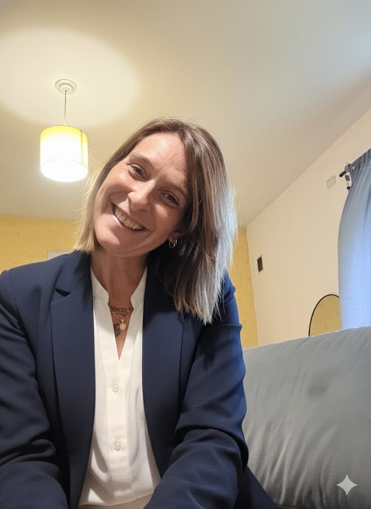
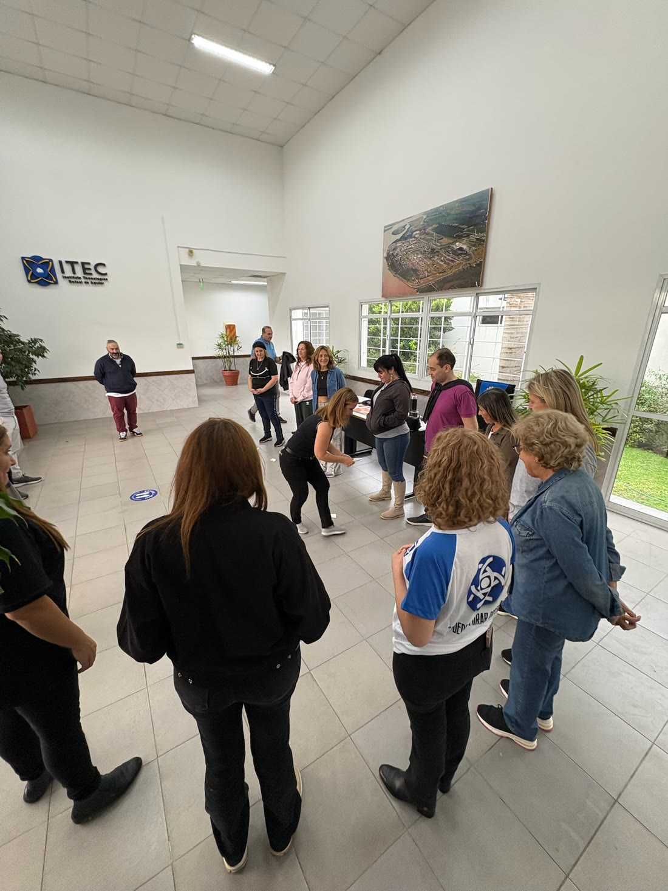
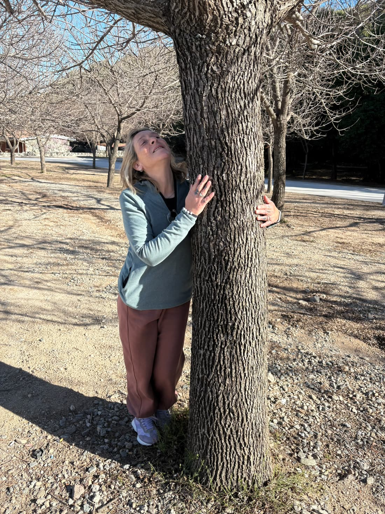
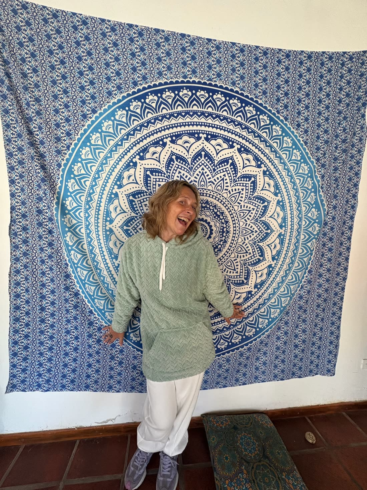
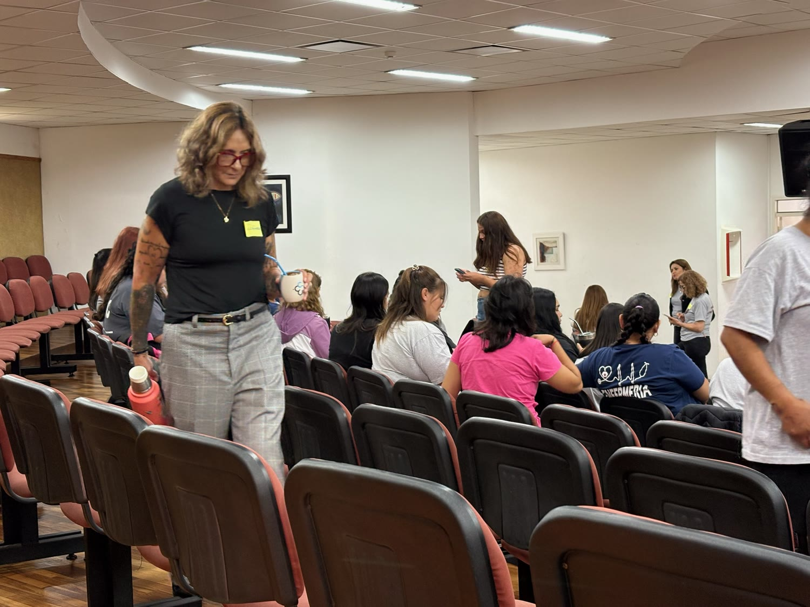
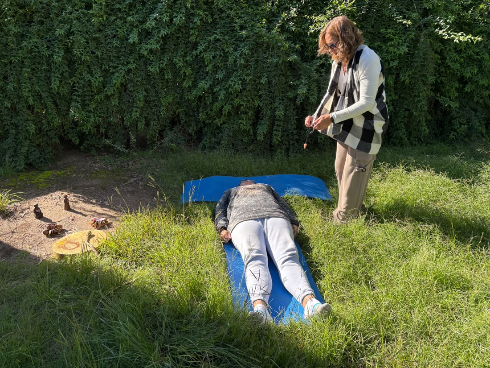
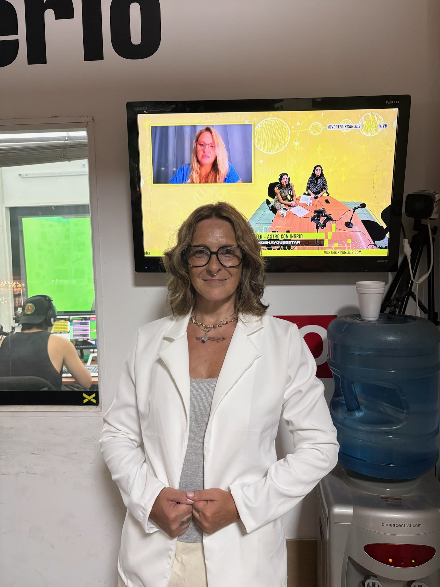

Senior Coach
Acompaño procesos de claridad, decisión y acción. Te ayudo a desbloquear lo que está esperando emerger.
Acompaño con sensibilidad y propósito
tu cambio.

+20 AÑOS ACOMPAÑANDOHace más de dos décadas que acompaño procesos profundos de cambio. Desde el derecho hasta la psicología social, desde el coaching hasta la tanatología — cada formación fue una respuesta a una pregunta que la vida me hizo.
Hoy mi propósito es claro: acompañar con sensibilidad a quienes están en el umbral de un cambio importante. Trabajo con mujeres y hombres que están reconstruyendo su historia, su identidad o su sentido.
Cada uno de estos roles es una forma de presencia. Todos conviven en mí — y cada uno aporta una mirada diferente cuando te acompaño.
Acompaño procesos de claridad, decisión y acción. Te ayudo a desbloquear lo que está esperando emerger.
Madre de tres: Lucas (mi angelito), Armando Tobías y María Macarena. La maternidad atraviesa todo lo que hago.
Acompaño procesos de duelo y pérdida. La muerte enseña a vivir mejor cuando alguien te toma de la mano.
Más de 20 años en el derecho. La mirada jurídica me dio rigor; la vida me dio la sensibilidad.
Lidero comunidades de mujeres en proceso. Creo en el liderazgo que escucha antes que en el que ordena.
Mujer en construcción permanente. Cada día reconozco que el camino es interno — y se camina con otras.
Diseño programas para acompañar transformaciones reales. Aprender es desarmarse para volver a ser.
Asesoro a organizaciones que quieren rediseñar su cultura desde lo humano y no desde lo procedimental.
Mi formación en psicología social me dio el marco para entender al sujeto en su vínculo, no en su aislamiento.
Sesiones individuales online para sanar desde adentro. Si no sabés cuál resuena con tu momento, te oriento.
Accedé a la sabiduría profunda de tu alma y saná bloqueos invisibles.
Conocer más → TerapiaReconectá con tu energía femenina más profunda y tu poder creador.
Conocer más → TerapiaUna lectura energética para reordenar lo que viniste a ser.
Conocer más → TerapiaAcompañamiento del duelo y de los cierres de ciclo, con presencia y paz.
Conocer más → TerapiaEl estado natural donde el cambio real ocurre desde tu sabiduría interior.
Conocer más → Ver todasConocé las cinco terapias en detalle y reservá tu sesión.
Ir a Terapias →Programas para acompañar transformaciones reales — en vos y en quienes acompañás.
Una mirada que transforma tu manera de observar, decidir y actuar en el mundo.
Conocer la formación →Familias que sanan, almas que florecen. Ordená lo que viene de atrás.
Conocer la formación →Habitar el presente con atención y serenidad, dentro y fuera de la práctica.
Conocer la formación →Un proceso grupal de acompañamiento para mujeres que están en el umbral de un cambio importante. Diseñado desde lo que aprendí en estos años: que la transformación se sostiene cuando hay método y comunidad.


Lucas — mi angelito en el cielo.
Armando Tobías — Armando por mi papá, y Tobías porque se me apareció un niño con una flor y porque fue la primera lectura bíblica que escuché.
María Macarena — María por mi mamá, Macarena por una promesa a la Virgen.
Pero sacándole canas verdes a la hermana Pilar.
Fuimos un grupo hermoso de personas que realizábamos meditaciones por videollamada. Aprendí ahí que la conexión no necesita el cuerpo presente — necesita presencia.




Un espacio donde converso con personas que están transformando su vida. Sobre duelo, sobre liderazgo, sobre maternidad, sobre lo que cuesta y sobre lo que sostiene.
Mirar en YouTubeLlegué con el corazón hecho un nudo después de perder a mi mamá. Eleonora no me dio respuestas — me ayudó a hacer las preguntas que necesitaba hacerme.
El Programa de Transformación me cambió la cabeza. La comunidad de mujeres que se armó es algo que sigo sintiendo dos años después.
Estaba paralizada con una decisión de vida. En tres sesiones con Eleonora pude ver con claridad lo que ya sabía pero no me animaba a mirar.
Tiene una mezcla rara y hermosa: rigor de abogada, alma de tanatóloga y mirada de coach. No conozco otra persona con esa combinación.
Es un encuentro 1:1 de aproximadamente una hora. Trabajamos lo que te traés con un método que combina coaching ontológico, psicología social y, cuando hace falta, herramientas tanatológicas. Las sesiones pueden ser presenciales o por videollamada.
El Programa de Transformación es de mujeres para mujeres. Las mentorías individuales son para cualquier persona que esté atravesando un cambio profundo.
Abro grupos dos veces al año, en marzo y agosto. Escribime por WhatsApp para reservar tu lugar antes de que se complete.
El valor de cada sesión y el del programa te lo paso por WhatsApp porque depende de la modalidad y de si combinás con otras instancias. Lo conversamos sin compromiso.
Te ofrezco un acompañamiento específico desde la tanatología. No hay un tiempo "normal" para atravesar un duelo — hay un tiempo tuyo, y se transita mejor con compañía.
Sí. La comunidad es un espacio abierto donde compartimos meditaciones, lecturas y prácticas. Es el primer paso para conocerme.
Un espacio de meditaciones, contenidos y compañía para mujeres que están en camino. Sin agenda comercial, sin spam — pura presencia.
Mandame un mensaje y conversamos. Lo que tenga que pasar, pasa después.